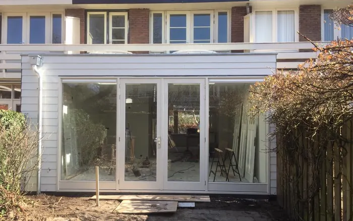
Ruimte erbij
Uitbouw en opbouw, tuinkamer en schuur, dakkapel en zolder, veranda.
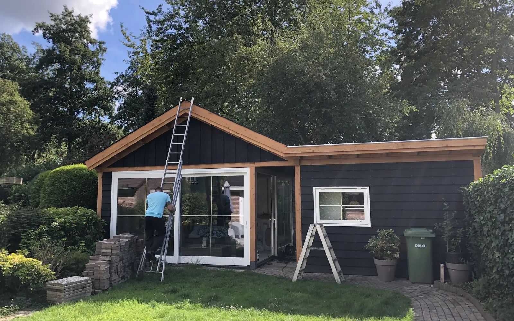
Uitbouw · Dakkapel · Kozijnen en deuren · Badkamer · Timmerwerk
Sinds 2013 bouwt Sander Reinsma aan woningen in de regio Utrecht. Van de fundering tot de laatste afgewerkte binnenwand: u heeft één aanspreekpunt.
Eigen foto's van Reinsmabouw: uitbouwen, opbouwen, dakkapellen, kozijnen en badkamers.
Bekijk alle projecten →
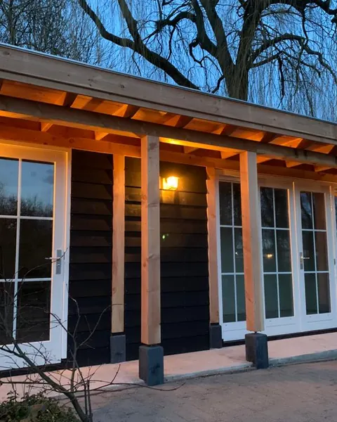
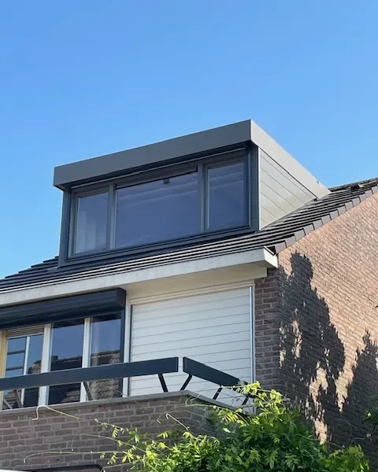
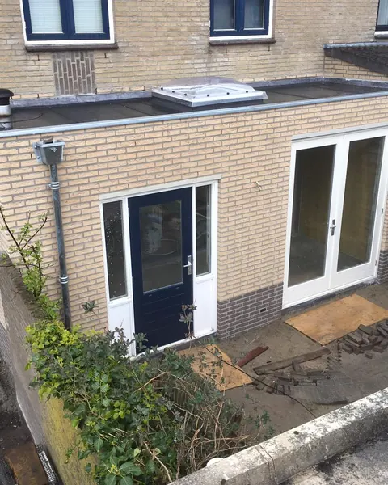
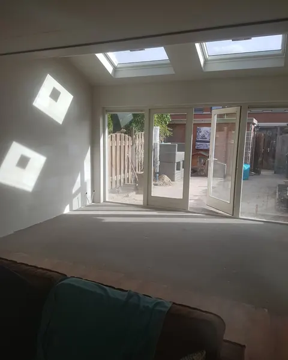
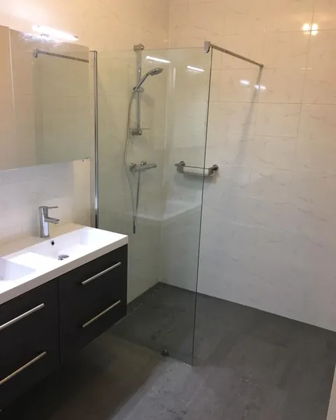
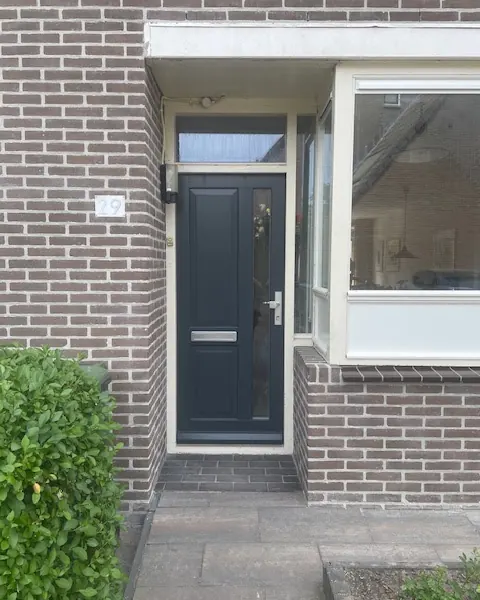
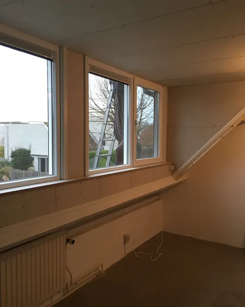
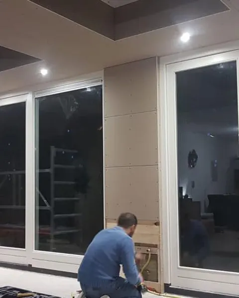
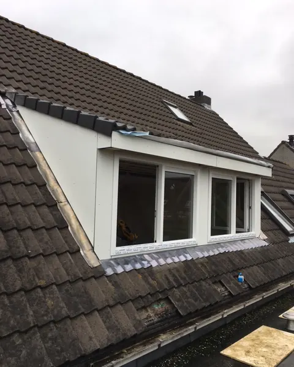
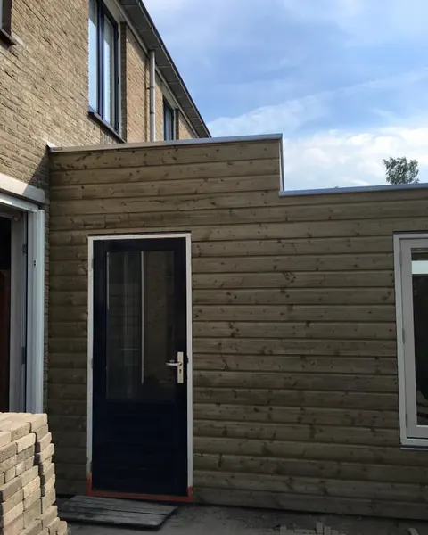
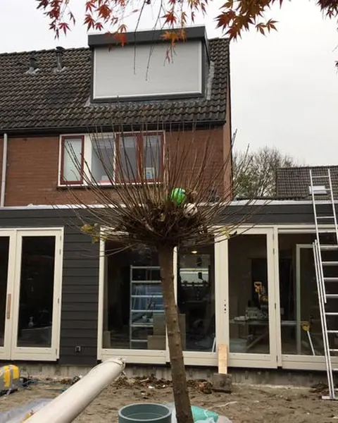
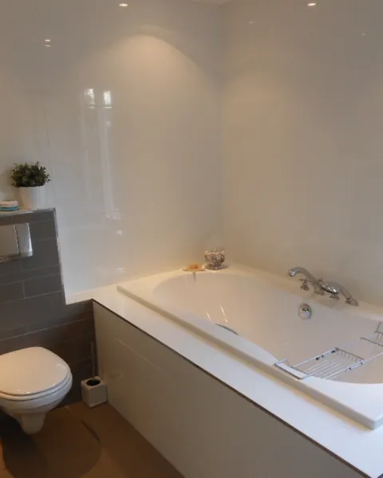
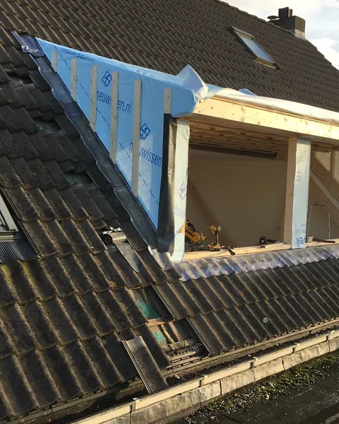
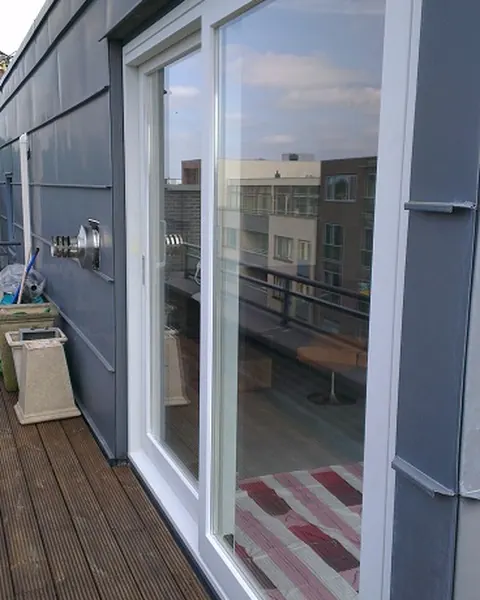
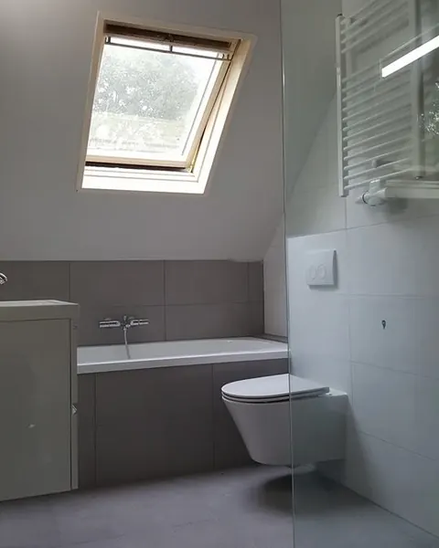
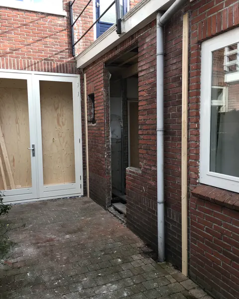
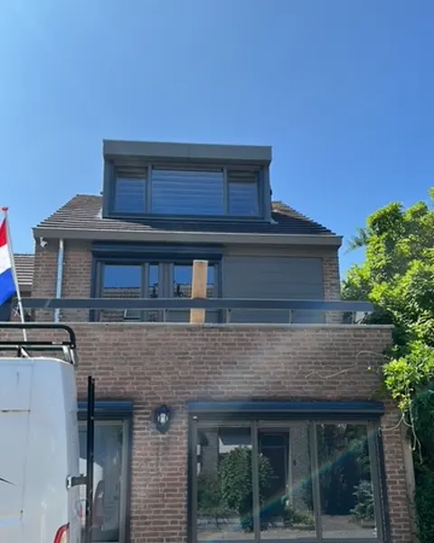
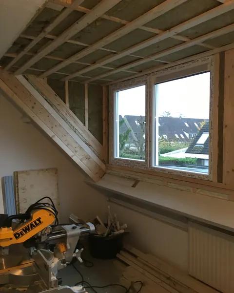
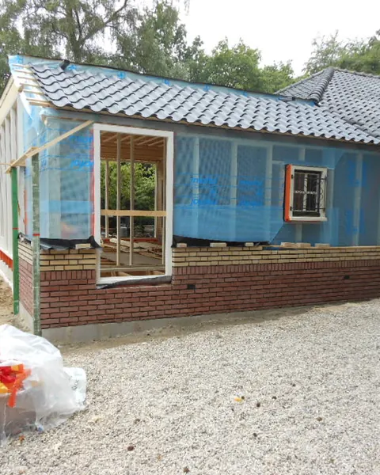
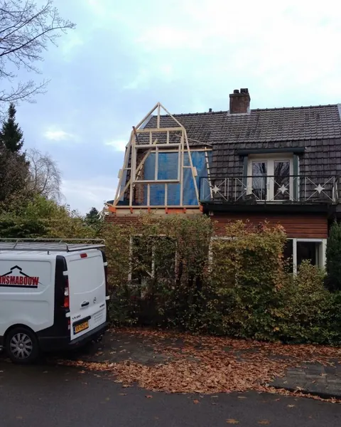
24 Google-reviews, alle 24 met vijf sterren
Eigen bedrijf sinds 2013, daarvoor jaren bij een aannemer
Voor de complete klus, ook het materiaal
Volgens de algemene voorwaarden
Drie soorten werk, één aanspreekpunt.
Swipe voor meer →

Uitbouw en opbouw, tuinkamer en schuur, dakkapel en zolder, veranda.

Houten en kunststof kozijnen, HR++-glas, deuren, sluitwerk, gevelbekleding en isolatie.

Badkamers, complete verbouwingen, keukenvoorbereiding en timmerwerk.
Swipe voor meer →
"Wij zijn meer dan tevreden met de uitbouw die Sander bij ons heeft gebouwd. Sander is nauwkeurig, meedenkend, flexibel en werkt netjes. Ook heeft hij de juiste contacten tav elektra, stukadoor, dakbedekking en schilder. Naast de uitbouw heeft hij nog diverse werkzaamheden bij ons uitgevoerd. Allemaal naar tevredenheid. Wij raden Reinsmabouw dan ook zeker aan."
"Reinsmabouw heeft bij ons een nieuwe voordeur geplaatst. Enorm tevreden. Precies wat we wilden. Een robuuste tijdloze deur met alle wensen, een draaikiep raam erin en een zeer fraai stalen frame ervoor. De afwerking is echt perfect, nadat ze weg gingen was er niets te zien van rommel en alles is netjes afgewerkt. Ook achteraf goeie service gehad, er stond meteen iemand klaar toen we service nodig hadden."
Vertel kort wat u wilt, stuur een foto mee en Sander denkt met u mee.